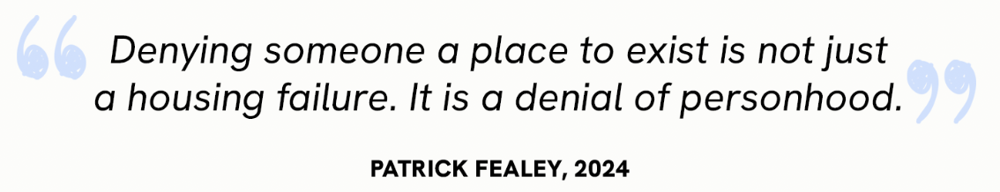
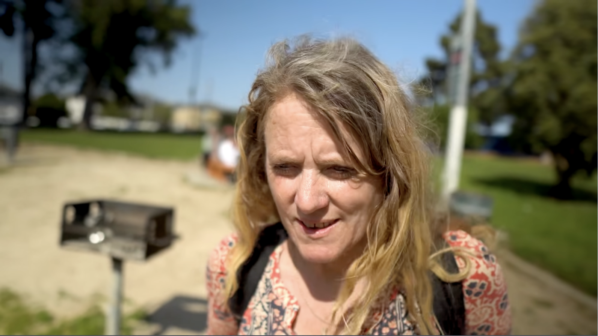
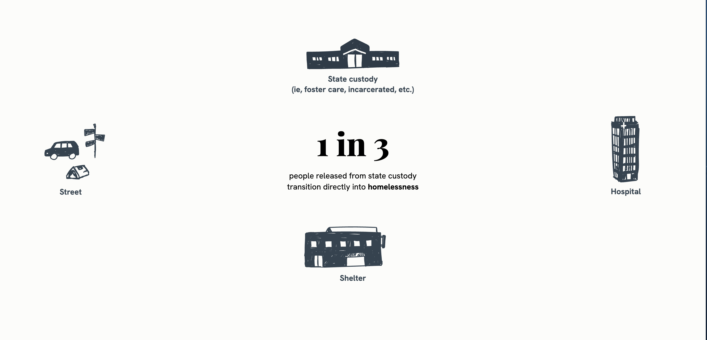

Most Recent

Mayor Lurie says he's trading S.F. shelter beds for sites with more services. Critics aren't convinced.
San Francisco Chronicle
April 12, 2026
Click any headline to uncover what's behind the story.
San Francisco Chronicle
April 12, 2026


